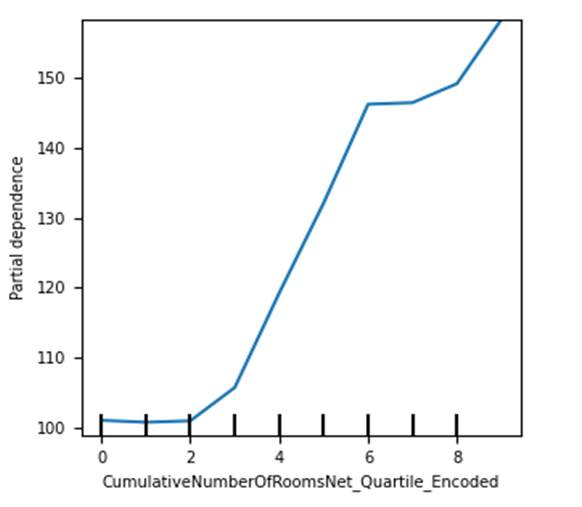
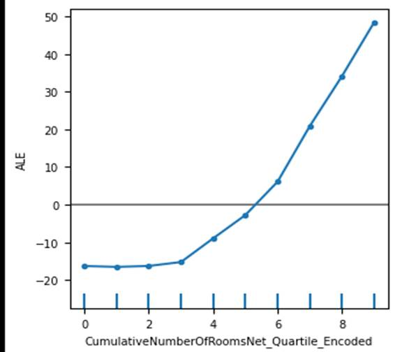
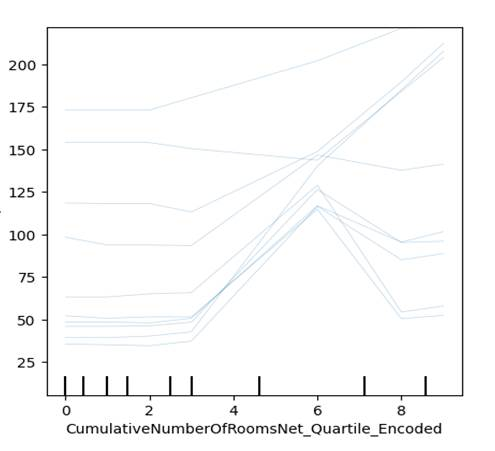
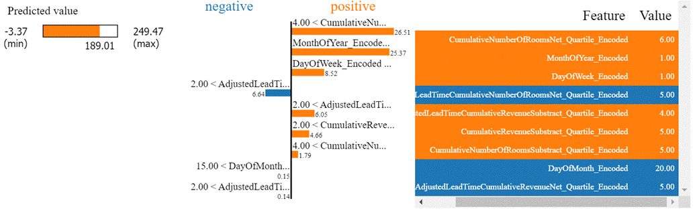
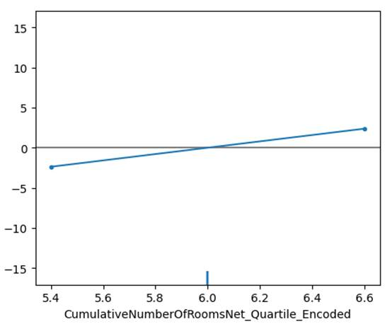
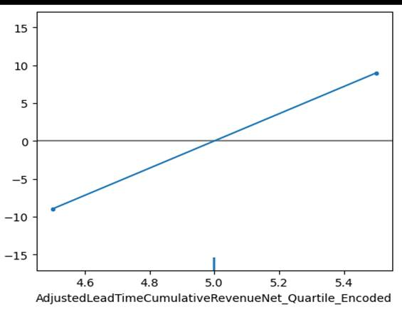
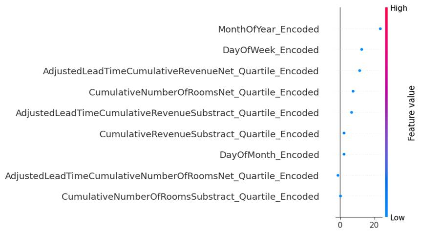

9.3: Explanation Techniques
Linear regression, logistic
regression, and decision tree discussed previously, have inherent properties
available to explain model behavior. Many other non-linear and complex
algorithms do not have any such available property to explain model behavior.
For any model to be of practical use, it is helpful to have some type of
explanation of the model. The explanation is sought for both the overall model
behavior and individual predictions. These explanation techniques can be
applied to any machine learning technique, including explainable models.
In the following sections, 9.3.1 and
9.3.2, we will try to explain the models and individual predictions for the
hotel total rooms booking predictions dataset and hotel bookings cancellations
dataset. After finding the best model, the model should be trained on the whole
dataset, including validation, and external test data. If, however, the
performance of the model worsens, we should revert to the original training
data used within the cross-validation training sample. For this chapter, we
need data points to explain the model prediction. We will only keep external
test data and will train the model on training and validation data.
9.3.1
Explaining Overall Model
There are methods available to
explain the model as a whole. It can explain the collective nature of the
model.
9.3.1.1 Partial
Dependence Plot
It is otherwise known as PDP. It is
performed at the feature level, one feature at a time. A predefined test data
is used for PDP. For the feature under exploration, each value is processed
individually. If the feature under observation is M and it has n rows, then
from M1 to Mn iteratively model predictions are obtained.
In each iteration, all the values in feature M are replaced with Mi
in the test data matrix, while values for all other features are kept constant.
In the next step, predicted values are obtained and averaged for Mi.
Once done, averaged predictions and different values of the feature are plotted
together to understand the relationship between the target and the feature.
It can identify if the relationship
between the feature and the dependent variable is linear, monotonic, or more
complex. More the degree of change in prediction as against the change in the
feature, the more important the feature. It suffers from a few limitations. One
such limitation is that it assumes that there is no correlation between
different features and ignores possible feature interactions.
Let us now look at partial
dependence plot in figure 9.3.1.1 for one of the features in the hotel room
booking dataset CumulativeNumberOfRoomsNet_Quartile_Encoded .
We have used Lightgbm model for the plot.

Figure 9.3.1.1 partial dependence
plot of Lightgbm regression model for the hotel total room booking dataset for
CumulativeNumberOfRoomsNet_Quartile_Encoded feature.
We can see that relationship of the
feature with the dependent variable is nearly linear in nature.
9.3.1.2 Accumulated
Local Effects Plot
It is abbreviated as ALE plot. It
overcomes a major disadvantage of a partial dependence plot and can work even
when features are correlated.
It studies the effect of the feature
at a certain level against average predictions. At a specific value for a
feature, it will suggest to what extent prediction is higher or lower than
average prediction. It takes the quantile distribution of features or specified
intervals within the domain of the given feature to define intervals. This
enables comparison among different features.
Now let us now look at the ALE plot
in figure 9.3.1.2 for the same scenario we discussed earlier, for the hotel
room booking dataset.

Figure 9.3.1.2 accumulated local
effects plot of Lightgbm regression model for the hotel total room booking
dataset for CumulativeNumberOfRoomsNet_Quartile_Encoded
feature.
As it considers quantile
distributions, plot is smooth at the top end. Very high values that stands out
in PDP is smoothened for the ACE plot. It looks more stable and easier to
interpret, in comparison to partial dependence plot.
9.3.1.3 Permutation
Feature Importance
This method uses prediction error as
a marker of feature importance. The List of values from the feature is selected
based on permutation and shuffling. The Prediction error is obtained for
permuted values. If prediction error increases for permuted shuffled values of
a feature, it is considered important.
This is done by obtaining original
errors for specific test data as the first step. In the second step, for each
feature permutation error is obtained by selecting feature values based on
shuffling and permutation while keeping the value of other features constant.
The permutation feature importance quotient for each feature is calculated as
the original error divided by the permutation error of the feature. Finally,
the permutation feature importance quotient is sorted in descending order for
all features together to obtain the most and least important features in
descending order.
Although it takes into account all
types of feature interactions amongst different features, if some features are
correlated, it can decrease the importance of correlated features.
9.3.1.4 Surrogate Model
Through a surrogate and
easy-to-explain model such as linear or logistic regression, we can try to
explain a black-box model. For being able to do this, 3 datasets are needed.
The first dataset is black-box model training data, which is used for training
the black-box model. The second dataset is surrogate model training data and
the third dataset is test data.
After the black-box model is trained
using black-box model training data, features from surrogate training data are
used and predicted values are obtained for surrogate training data and used as
a dependent variable of the surrogate model. The surrogate model is trained
using predicted labels from the black-box model as the dependent variable and
features from the surrogate training dataset. Finally, both the black-box model
and surrogate model are used for generating predictions for test data. If the
performance of the black-box model and surrogate model is similar and the
R-square of the surrogate model is acceptable, then the surrogate model is used
for explaining the black-box model.
9.3.2
Explaining Individual Predictions
Understanding how the model performs
through the explanation of the overall model is useful. There are methods
available for explaining individual predictions from the model as well. These
techniques can be useful when we have to probe the root cause behind certain
predicted values from the model at an individual level.
9.3.2.1 Individual
Conditional Expectation Plots
It is otherwise known as the ICE
plot. It is related to the partial dependence plot method. However, it differs
in the aspect that plots are generated for individual values instead of
averages. One line in ICE represents one sample. It can help us understand the
pattern of change in prediction concerning change in a feature.
Figure 9.3.2.1 has the ICE plot for
the CumulativeNumberOfRoomsNet_Quartile_Encoded
discussed earlier. We can see that the linear relationship explored between the
feature and dependent variable is not always true. In many cases it is
polynomial. As we can see the total rooms sometimes increase and then decrease
between different quartiles of the feature.

Figure 9.3.2.1 Individual
Conditional Expectation plot of Lightgbm regression model for the hotel total
room booking dataset for the first 10 rows of external test data, for the
feature CumulativeNumberOfRoomsNet_Quartile_Encoded
9.3.2.2 Local
interpretable model-agnostic explanations
It is otherwise known as LIME. It
uses an explainable model to explain individual predictions of a black-box
model. To explain a specific prediction from the black-box model, a perturbed
sample dataset is created. To explain a specific predicted value from the
black-box model, all the values from the feature matrix are taken and randomly
changed for different features. A new dataset is created from this exercise.
For this dataset, prediction from the black-box model is obtained.
Perturbed samples are weighted based
on proximity to the original feature values which we are trying to explain. The
predicted value from the black-box model is used as the dependent variable and
weighted perturbed feature values as features for training an explainable
model.
Finally, the instance we were trying
to explain from the black-box model is explained through an explainable model.
Figure 9.3.2.2 displays the LIME
plot of Lightgbm regression model. We have used 4th row of external test data
from the hotel total room booking dataset.

Figure 9.3.2.2 LIME plot of Lightgbm
regression model for the hotel total room booking dataset for the 4th row of
external test data.
This plot has 3 subplots. First
subplot has the predicted values and third subplot has actual feature names and
values. The second subplot has a negative and positive relationship indicator
against each feature. For example, for the DayofWeek_Encoded feature, total
rooms increase in demand for days that are farther from Monday. Similarly, for
the AdjustedLeadTimeCumulativeNumberOfRoomsNet_Quartile_Encoded
feature, it has a negative relationship with total room demand. This is the
interaction between lead time and the net number of rooms quartile feature. The
second part of the plot also suggests the current value for the feature,
against a threshold set by the model. For example, the DayOfMonth_Encoded feature, has
a negative relationship with the total rooms sold for a check-in date. I.e.
Total number of rooms is sold more towards the beginning of the month, and then
gradually decreases as the month passes. Here the value is 20, which is higher
than the set threshold of 15, and the check-in date for which the model has
predicted is farther in the month.
9.3.2.3 Counterfactual
Model Explanations
The counterfactual model explanation
is a way of explaining a model where the smallest change in a feature is
compared against a noticeable change in the predictable outcome. To understand
"Noticeable outcome", let's take an example of a model which predicts
if someone has diabetes or not by using daily minutes of exercise, a
binary-coded feature for a family history of diabetes, age, and a binary-coded
feature for the stressful job. For someone who exercises for 45 minutes, with
no family history of diabetes, who is 40 years old, and who has no stress job,
the model prediction outcome came as non-diabetic. However, by only changing
jobs as stressful, the prediction came as diabetic. In this case, the
noticeable outcome is changing between the different classes of diabetic vs
non-diabetic.
Similarly, let's take a regression
prediction problem. We are predicting someone's income potential based on age,
highest qualification, and distance from the nearest metropolis. If the age is
below 30, the highest qualification is a bachelor's and distance is 200 miles,
predicted income is $40000. However, if we reduce the distance from the
metropolis to 10 miles, income changes to $65000. In this case, an additional
income of $25000 is 62.5% more than the previous salary. It can be considered a
"noticeable outcome".
This method tries to identify the
smallest change to the features which will bring noticeable outcomes. However,
these changed feature matrices should be similar to the original instance we
are trying to explain. Minimal changes should be present in additional instances
we are using to explain the original instance. These instances are used for
explaining the original instance. It will be explained in the lines if we make
x change in m feature, the outcome will change noticeably , as a
counterfactual.
Figure 9.3.2.3a and 9.3.2.3b has the
Counterfactual plot of Lightgbm regression model for the hotel total room
booking dataset. We have plotted the 4th row of external test data.

Figure 9.3.2.3a Counterfactual plot
of Lightgbm regression model for the hotel total room booking dataset for the
4th row of external test data, for the feature CumulativeNumberOfRoomsNet_Quartile_Encoded
feature.

Figure 9.3.2.3b Counterfactual plot
of Lightgbm regression model for the hotel total room booking dataset for the
4th row of external test data, for the feature AdjustedLeadTimeCumulativeRevenueNet_Quartile_Encoded.
Previously, we have seen that the
feature CumulativeNumberOfRoomsNet_Quartile_Encoded
has the highest impact on overall model. For this instance of data, this has a
relatively stable and lower contribution for the output. Even if we changed the
values of the feature, the impact on outcome was marginal. In contrast, for the
feature AdjustedLeadTimeCumulativeRevenueNet_Quartile_Encoded ,
if we slightly changed the values, the impact on output was higher than
previously thought.
9.3.2.4 SHAP
SHAP is the contribution of each
feature towards the predicted outcome from the model. To calculate the SHAP
value, in the first step model performance is obtained for a sample dataset. In
the second step, the importance of individual features is obtained by giving
different values to the model and observing whether model performance increases
or decreases. It can be positive or negative. To identify the most to least
impactful features, the absolute value of SHAP is considered.
We can obtain SHAP feature
importance for each observation in the feature matrix. This can help us
interpret the model globally by analyzing and summarizing the SHAP values in
each observation for each feature.
Now let us look at the SHAP model
explanation for the 4th row of external test data for Lightgbm regression in
figure 9.3.2.4

Figure 9.3.2.4 SHAP plot of Lightgbm
regression model for the hotel total room booking dataset for the 4th row of
external test data.
We can see the most impactful
feature is MonthofYear_Encoded . This is followed by
DayOfWeek_Encoded . The feature AdjustedLeadTimeCumulativeRevenueNet_Quartile_Encoded
was found to be one of the impactful features in counterfactual model explanation
method. SHAP found this to be the third most impactful feature for the 4th
sample of external test data.